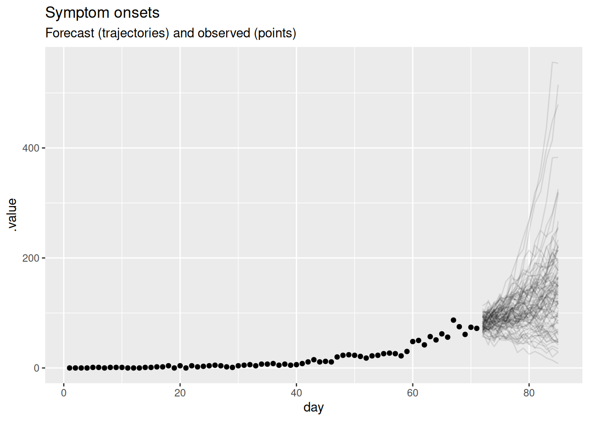
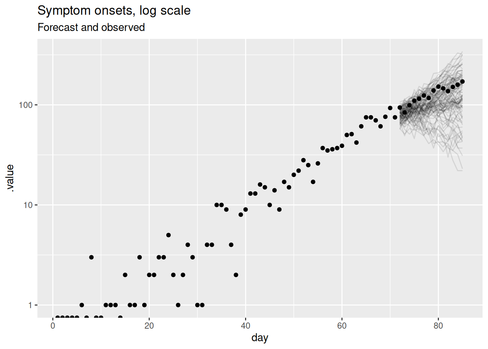
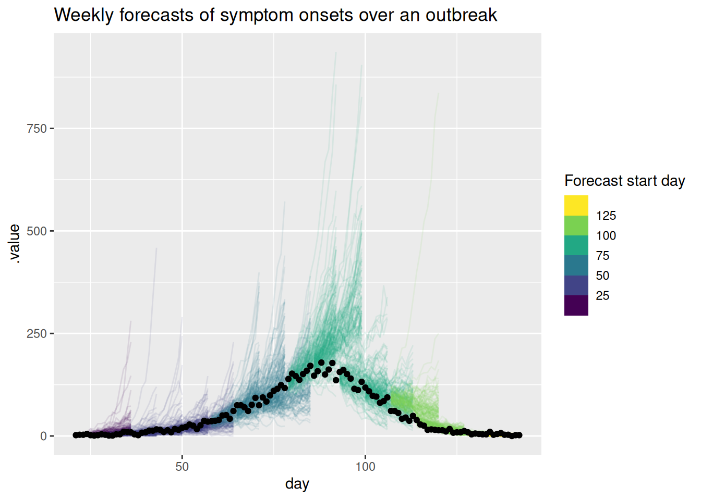

library("nfidd")
library("dplyr")
library("ggplot2")Visualising infectious disease forecasts
Introduction
Epidemiological forecasts are probabilistic statements about what might happen to population disease burden in the future. In this session we will make some simple forecasts using a commonly used infectious disease model, based on the renewal equation. We will see how we can visualise such forecasts, and visually compare them to what really happened.
Slides
Objectives
The aim of this session is to introduce the concept of forecasting and forecast visualisation using a simple model.
NoteSetup
Source file
The source file of this session is located at sessions/forecasting-visualisation.qmd.
Libraries used
In this session we will use the nfidd package to load a data set of infection times and corresponding forecasts, the dplyr package for data wrangling, and the ggplot2 library for plotting.
Tip
The best way to interact with the material is via the Visual Editor of RStudio.
Initialisation
We set a random seed for reproducibility. Setting this ensures that you should get exactly the same results on your computer as we do.
set.seed(123)What is forecasting?
Forecasting is the process of making predictions about the future based on past and present data. In the context of infectious disease epidemiology, forecasting is usually the process of predicting the future course of some metric of infectious disease incidence or prevalence based on past and present data. Here we focus on forecasting observed data (the number of individuals with new symptom onset) but forecasts can also be made for other quantities of interest such as the number of infections, the reproduction number, or the number of deaths. Epidemiological forecasting is closely related to nowcasting and, when using mechanistic approaches, estimation of the reproduction number. In fact, the model we will use for forecasting could also be used for real-time estimation of the reproduction number and nowcasting, two tasks we won’t have time to go into here but which are discussed in the longer version of this course. The only difference to these tasks is that here we extend the model into the future.
Extending a model into the future
We will use a data set of infections we generate using functions from the nfidd R package, and look at forecasts made using a renewal equation model. This model assumes that number infectious people determines the number of future infectious people via the reproduction number \(R_t\).
The reproduction number \(R_t\)
The reproduction number \(R_t\) (sometimes called the effective reproduction number) more generally describes the average number of secondary infections caused by a single infectious individual and can vary in time and space as a function of differences in population level susceptibility, changes in behaviour, policy, seasonality etc. The reproduction number \(R_t\) is therefore a more general concept than the basic reproduction number \(R_0\) which represents the average number of secondary infections caused by a single infectious individual in a completely susceptible population.
TipThe discrete renewal equation (optional)
The renewal equation represents a general model of infectious disease transmission which includes the SIR model as a special case. In its basic form it makes no assumption about the specific processes that cause \(R_t\) to have a certain value and/or change over time, but instead it only relates the number of infected people in the population, the current value of the reproduction number and a delay distribution that represents the timings of when individuals infect others relative to when they themselves became infected, the so-called generation time. Mathematically, it can be written as
\[ I_t = R_t \sum_{i=1}^{g_\mathrm{max}} I_{t-i} g_i \]
Here, \(I_t\) is the number of infected individuals on day \(t\), \(R_t\) is the current value of the reproduction number and \(g_i\) is the probability of a secondary infection occurring \(i\) days after the infector became infected themselves, with a maximum \(g_\mathrm{max}\).
The forecasting model we visualise in this session is based on \(R_t\) doing a geometric random walk in time. The step size of this geometric random walk is estimated from data, and this is then used to project into the future. For more information on this approach to forecasting see, for example, Funk et al. (2018).
NoteThe geometric random walk model (optional)
We might expect the reproduction number to change smoothly over time (except in situations of drastic change such as a very effective intervention) and to be similar at adjacent time points. We can model this by assuming that the reproduction number at time \(t\) is a random draw from a normal distribution with mean equal to the reproduction number at time \(t-1\) and some standard deviation \(\sigma\). This can be described as a random walk model for the reproduction number. In fact, rather than using this model directly, a better choice might be to use a model where the logarithm of the reproduction number does a random walk, as this will ensure that the reproduction number is always positive and that changes are multiplicative rather than additive (i.e as otherwise the same absolute change in the reproduction number would have a larger effect when the reproduction number is small which likely doesn’t match your intuition for how outbreaks evolve over time). We can write this model as
\[ \sigma \sim HalfNormal(0, 0.05) \\ \] \[ \log(R_0) \sim \mathcal{Lognormal}(-0.1, 0.5) \] \[ \log(R_t) \sim \mathcal{N}(\log(R_{t-1}), \sigma) \]
Here we have placed a prior on the standard deviation of the random walk, which we have assumed to be half-normal (i.e., normal but restricted to being non-negative) with a mean of 0 and a standard deviation of 0.05. This is a so-called weakly informative prior that allows for some variation in the reproduction number over time but not an unrealistic amount. We have also placed a prior on the initial reproduction number, which we have assumed to be log-normally distributed with a mean of -0.1 and a standard deviation of 0.5. This is a weakly informative prior that allows for a wide range of initial reproduction numbers but has a mean of approximately 1. The last line is the geometric random walk.
Simulating a geometric random walk
You can have a look at an R function for performing the geometric random walk:
geometric_random_walkfunction (init, noise, std)
{
n <- length(noise) + 1
x <- numeric(n)
x[1] <- log(init)
for (i in 2:n) {
x[i] <- x[i - 1] + noise[i - 1] * std
}
exp(x)
}
<bytecode: 0x562d513eead0>
<environment: namespace:nfidd>We can use this function to simulate a random walk:
R <- geometric_random_walk(init = 1, noise = rnorm(100), std = 0.1)
data <- tibble(t = seq_along(R), R = exp(R))
ggplot(data, aes(x = t, y = R)) +
geom_line() +
labs(title = "Simulated data from a random walk model",
x = "Time",
y = "R")You can repeat this multiple times either with the same parameters or changing some to get a feeling for what this does.
We will now look at some data from an infectious disease outbreak and forecasts from a renewal equation model. First, we simulate some data using functions from the nfidd package.
gen_time_pmf <- make_gen_time_pmf()
ip_pmf <- make_ip_pmf()
onset_df <- simulate_onsets(
make_daily_infections(infection_times), gen_time_pmf, ip_pmf
)
tail(onset_df)# A tibble: 6 × 3
day onsets infections
<dbl> <int> <int>
1 137 1 5
2 138 3 1
3 139 5 4
4 140 3 1
5 141 2 1
6 142 2 0This uses a data set of infection times that is included in the R package, and a function to turn these into daily number of observed symptom onsets. Do not worry too much about the details of this. The important thing is that we now have a data set onset_df of symptom onset.
TipHow does this work?
If you want to see how this works look at the function code by typing simulate_onsets in the console.
Visualising the forecast
We can now visualise a forecast made from the renewal equation model we used for forecasting. Once again, this forecast is provided in the nfidd package which we loaded earlier. We will first extract the forecast and then plot the forecasted number of symptom onsets alongside the observed number of symptom onsets before the forecast was made.
data(rw_forecasts)
horizon <- 14
forecast_day <- 71
forecast <- rw_forecasts |>
ungroup() |>
filter(origin_day == forecast_day)
previous_onsets <- onset_df |>
filter(day <= forecast_day)
TipHow did we generate these forecasts?
Some important things to note about these forecasts:
- We used a 14 day forecast horizon.
- Each forecast used all the data up to the forecast date.
- We generated 1000 predictive posterior samples for each forecast.
- We started forecasting 3 weeks into the outbreak and then forecast every 7 days until the end of the data (excluding the last 14 days to allow a full forecast).
- We use the same simulated outbreak data as before:
gen_time_pmf <- make_gen_time_pmf()
ip_pmf <- make_ip_pmf()
onset_df <- simulate_onsets(
make_daily_infections(infection_times), gen_time_pmf, ip_pmf
)
head(onset_df)# A tibble: 6 × 3
day onsets infections
<dbl> <int> <int>
1 1 0 0
2 2 0 1
3 3 0 0
4 4 0 2
5 5 0 1
6 6 1 1forecast |>
filter(.draw %in% sample(.draw, 100)) |>
ggplot(aes(x = day)) +
geom_line(alpha = 0.1, aes(y = .value, group = .draw)) +
geom_point(data = previous_onsets, aes(x = day, y = onsets), color = "black") +
labs(
title = "Symptom onsets",
subtitle = "Forecast (trajectories) and observed (points)"
)
In this plot, the dots show the data and the lines are forecast trajectories that the model deems plausible and consistent with the data so far.
TipTake 5 minutes
What do you think of this forecast? Does it match your intuition of how this outbreak will continue? Is there another way you could visualise the forecast that might be more informative?
NoteSolution
- The forecast mainly predicts things to continue growing as they have been. However, some of the trajectories are going down, indicating that with some probabilities the outbreak might end.
- Based purely on the data and without knowing anything else about the disease and setting, it is hard to come up with an alternative. The model seems sensible given the available data. In particular, uncertainty increases with increasing distance to the data, which is a sign of a good forecasting model.
- Instead of visualising plausible trajectories we could visualise a cone with a central forecast and uncertainty around it. We will look at this in the next session as an alternative.
If we want to know how well a model is doing at forecasting, we can later compare it do the data of what really happened. If we do this, we get the following plot.
future_onsets <- onset_df |>
filter(day <= forecast_day + horizon)
forecast |>
filter(.draw %in% sample(.draw, 100)) |>
ggplot(aes(x = day)) +
geom_line(alpha = 0.1, aes(y = .value, group = .draw)) +
geom_point(data = future_onsets, aes(x = day, y = onsets), color = "black") +
labs(
title = "Symptom onsets",
subtitle = "Forecast (trajectories) and observed (points)"
)
TipTake 5 minutes
What do you think now of this forecast? Did the model do a good job? Again, is there another way you could visualise the forecast that might be more informative?
NoteSolution
- On the face of it the forecast looks very poor with some very high predictions compared to the data.
- Based on this visualisation it is hard to tell if the model is doing a good job but it seems like it is not.
- As outbreaks are generally considered to be exponential processes it might be more informative to plot the forecast on the log scale.
forecast |>
filter(.draw %in% sample(.draw, 100)) |>
ggplot(aes(x = day)) +
geom_line(alpha = 0.1, aes(y = .value, group = .draw)) +
geom_point(data = future_onsets, aes(x = day, y = onsets), color = "black") +
scale_y_log10() +
labs(title = "Symptom onsets, log scale", subtitle = "Forecast and observed")Warning in scale_y_log10(): log-10 transformation introduced infinite values.
This should be a lot more informative. We see that for longer forecast horizons the model is not doing a great job of capturing the reduction in symptom onsets. However, we can now see that the model seems to be producing very reasonable forecasts for the first week or so of the forecast. This is a common pattern in forecasting where a model is good at capturing the short term dynamics but struggles with the longer term dynamics.
We managed to learn quite a lot about our model’s forecasting limitations just looking at a single forecast using visualisations. However, what if we wanted to quantify how well the model is doing? In order to do that we need to look at multiple forecasts from the model.
Visualising multiple forecasts from a single model
As for a single forecast, our first step is to visualise the forecasts as this can give us a good idea of how well the model is doing without having to calculate any metrics.
rw_forecasts |>
filter(.draw %in% sample(.draw, 100)) |>
ggplot(aes(x = day)) +
geom_line(
aes(y = .value, group = interaction(.draw, origin_day), col = origin_day),
alpha = 0.1
) +
geom_point(
data = onset_df |>
filter(day >= 21),
aes(x = day, y = onsets), color = "black") +
scale_color_binned(type = "viridis") +
labs(title = "Weekly forecasts of symptom onsets over an outbreak",
col = "Forecast start day")
As for the single forecast it may be helpful to also plot the forecast on the log scale.
rw_forecasts |>
filter(.draw %in% sample(.draw, 100)) |>
ggplot(aes(x = day)) +
geom_line(
aes(y = .value, group = interaction(.draw, origin_day), col = origin_day),
alpha = 0.1
) +
geom_point(data = onset_df, aes(x = day, y = onsets), color = "black") +
scale_y_log10() +
scale_color_binned(type = "viridis") +
labs(title = "Weekly symptom onset forecasts: log scale",
col = "Forecast start day")Warning in scale_y_log10(): log-10 transformation introduced infinite values.
log-10 transformation introduced infinite values.
TipTake 5 minutes
What do you think of these forecasts? Are they any good? How well do they capture changes in trend? Does the uncertainty seem reasonable? Do they seem to under or over predict consistently? Would you visualise the forecast in a different way?
NoteSolution
What do you think of these forecasts?
- We think these forecasts are a reasonable place to start but there is definitely room for improvement.
Are they any good?
- They seem to do a reasonable job of capturing the short term dynamics but struggle with the longer term dynamics.
How well do they capture changes in trend?
- There is little evidence of the model capturing the reduction in onsets before it begins to show in the data.
Does the uncertainty seem reasonable?
- On the natural scale it looks like the model often over predicts. Things seem more balanced on the log scale but the model still seems to be overly uncertain.
Do they seem to under or over predict consistently?
- It looks like the model is consistently over predicting on the natural scale but this is less clear on the log scale.
Going further
- What other ways could we visualise the forecasts especially if we had forecasts from multiple models and locations or both?
- Based on these visualisations how could we improve the model?
Wrap up
References
Funk, Sebastian, Anton Camacho, Adam J. Kucharski, Rosalind M. Eggo, and W. John Edmunds. 2018. “Real-Time Forecasting of Infectious Disease Dynamics with a Stochastic Semi-Mechanistic Model.” Epidemics 22 (March): 56–61. https://doi.org/10.1016/j.epidem.2016.11.003.